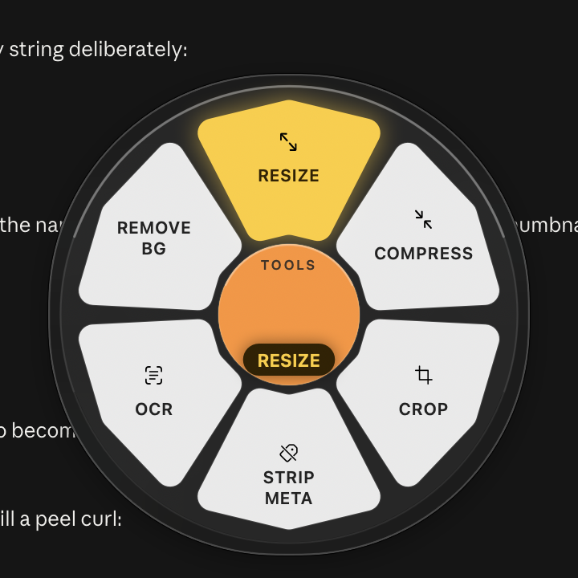
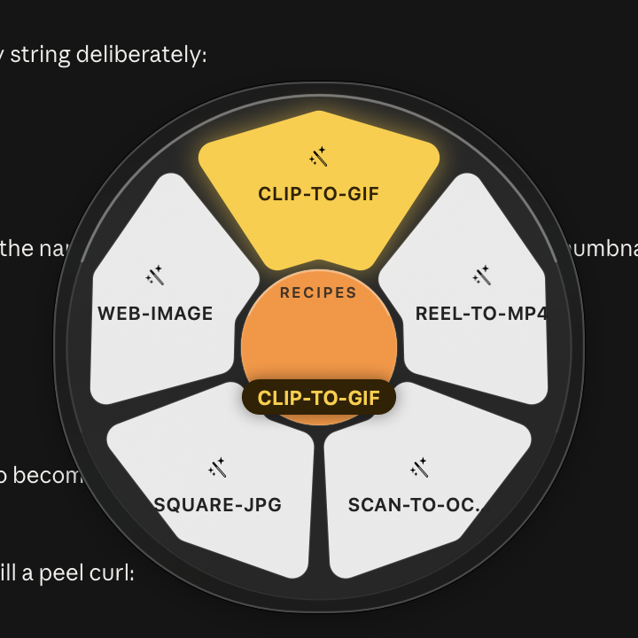

The converter that
comes to you.
Hold Shift, drag a file, drop it on a petal. Kuori puts a wheel of every format that file can become right where you are — and converts it on your Mac, without uploading a thing.
Live preview — hover a petal
How it works
Three seconds, no window management.
No app to bring forward, no file picker, no “choose an output folder” dialog. The wheel appears, you let go, it’s done.
Shift-drag
Start dragging a file out of Finder with Shift held. The wheel appears, already showing what that file can turn into.
Drop on a petal
Only formats every dragged file can produce are offered, so a mixed selection never gives you a dead end. Arrows and ↵ work too.
It’s in Finder
The result lands next to the original and Finder reveals it. The wheel gets out of your way on its own.
Formats
Everything you actually hit.
Nine conversion engines are bundled inside the app, so it works on a machine with nothing installed — no Homebrew, no Python, no first-run download.
| Class | Converts | Engine |
|---|---|---|
| Images | jpg png webp heic avif tiff bmp gif in any direction, SVG → raster, raster → SVG by tracing |
libvips · ImageIO resvg · potrace |
| Audio | mp3 m4a aac wav flac ogg opus aiff |
ffmpeg |
| Video | mp4 mov mkv webm avi m4v, plus → GIF and → any audio format |
ffmpeg |
| Documents | md html rtf txt epub docx odt, Office → PDF, PDF → txt/docx |
pandoc LibreOffice |
images → PDF, PDF → a folder of png jpg tiff pages |
PDFKit | |
| Archives | folder ↔ zip tar tar.gz 7z, extract zip tar 7z rar |
bsdtar · 7-Zip |
Tools
Hold ⌥ for the things that aren’t conversions.
Same file, rewritten. Two of these lean on frameworks already in macOS, so they cost nothing and never leave the machine.
Nine same-format edits
Resize, compress, crop to aspect, trim, strip metadata, merge and split PDFs — each with presets so there is nothing to type.

OCR → searchable PDF
Vision reads the page and Kuori writes a real invisible text layer, so the PDF is selectable, searchable and Spotlight-indexed — not a picture of words.
Remove background
The same subject-lift macOS uses in Preview, applied to a whole selection at once, out as transparent PNG.

Recipes & watch folders
For the thing you do every week.
A recipe chains steps — resize to 1600,
strip metadata, save as WebP. Point a watch folder at one and anything you drop
in that folder is converted and filed automatically, the original moved to
_processed/.
Command line
The same engine, scriptable.
Everything the wheel does, kuori does —
same capability graph, same bundled engines, no separate install.
kuori convert photo.png --to webp --quality 80 kuori convert *.jpg --to pdf --out ~/Desktop kuori convert shot.png --preset web-jpg kuori tool ocr scan.png # → searchable kuori recipe square-jpg *.png kuori watch add ~/Incoming --to webp kuori formats # the whole graph
Local only
Nothing is uploaded. Ever.
Dragging a passport scan, a contract, or a client’s raw footage into a free web converter means handing it to someone else’s server. Kuori has no network code in the conversion path at all — the engines run as child processes on your Mac and the bytes never leave it.
9
engines bundled in the app
0
bytes leave your Mac
50
checks in the binary
MIT
and the source is right there
Get it
Download, or build from source.
Signed ad-hoc, so the first launch needs a right-click → Open. MIT licensed — Swift and AppKit, SwiftPM, no Xcode project, safety checks inside the binary.
git clone https://github.com/ishanmalu/kuori cd kuori swift run Kuori --selftest # 50 graph + logic checks Scripts/bundle-engines.sh # vendor ffmpeg, vips, pandoc, … Scripts/build-app.sh 0.3.0 # → dist/Kuori.app
brew install ffmpeg vips pandoc ….